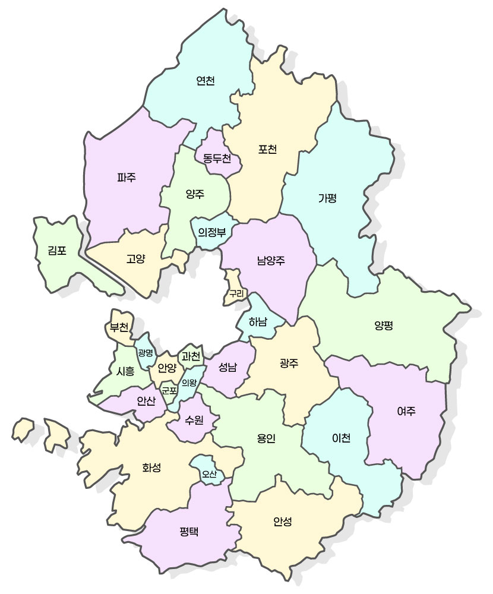

Phrasing
인라인 스타일링, 텍스트 그룹화
: 줄바꿈

주의:비밀번호 타인 공유 금지
emphasis(강조), 언어적 강조(어조): 문맥상 강하게 읽어야 하는 단어
bold(굵게), 의미없음, 단순시각화: 제품명, 문서 첫 단어, 단순 강조
italic(이텔릭), 의미없음, 특정한 어조/구분: 전문 용어, 외래어, 생각, 관용구
형광펜, 관련성 표시: 검색 결과 하이라이트, 인용문 내 강조
underline(밑줄)
Strikethrough(취소선)
아래첨자
윗첨자
웹 사이트 참조(인라인)
작은 글자: 부가 가치세
이전날짜
변경날짜
이문장에서 철자 오탈자가 포함되어 있습니다.
할인가: 50,000원이 39,000원으로
오늘 할일 : 아침운동하기(완료)
물의 화학식은 H2O입니다.
배열의 요소: A0, A1, A2
피타고라스 정리: a2 + b2 = c2
행사일 : August 1 st
이문장에 대한 부연 설명입니다. [1]
스티븐 잡스는 Stay hungry, stay foolish
라고 말했습니다.
월 이용료 :9,900원 (부가세 포함)
W3C
웹표준은 W3C에서 관리합니다.
HTML은 웹 페이지를 만드는 업어입니다.
레오나르도 다 빈치의 모나리자는 루브르 박물관에 있습니다.
행사일 :
수업시간 :
작업 소요 시간 :
http://example.com/extremely/long/url/link
Supercalifragilisticexpialidocious
화면에 메시지를 띄우려면 console.log('안녕하세요');를 사용하세요.
HTML은 웹 페이지의 뼈대를 구성하는 마크업 언어입니다.
문서를 복사하려면 Ctrl + C를 누르세요.
삼각형의 넓이는 w × h / 2 입니다.
잘못된 비밀번호를 입력하면 Error: Invalid Password라는 메시지가 뜹니다.
사용자 إبراهم: 2등
사용자 إبراهم: 2등
안녕하세요
안녕하세요
漢
字
최신 웹 표준 기술인 Web Components(Shadow DOM)에서 재사용 가능한 커스텀 컴포넌트를 만들 때, 외부에서 넘겨주는 텍스트나 HTML 요소를 끼워 넣는 "빈 구멍(Placeholder)" 역할을 합니다.
Sectioning
HTML5 시멘틱 태그 완벽 가이드
작성일:
시멘틱 태그는 웹 접근성을 높여줍니다.
서비스 소개
저희 회사는 최신 웹 개발 솔루션을 제공합니다.